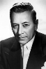

Country:United States, 122 minutes
Spoken languages:
Genres:Comedy, Music, Romance, Crime
Director(s):Billy Wilder
Writer(s):Billy Wilder, I. A. L. Diamond
Video Codec:Unknown
Number: 2111


Certification:NR
Storyline:
Two musicians witness a mob hit and struggle to find a way out of the city before they are found by the gangsters. Their only opportunity is to join an all-girl band as they leave on a tour. To make their getaway they must first disguise themselves as women, then keep their identities secret and deal with the problems this brings - such as an attractive bandmate and a very determined suitor.
Cast: 


Medium: Original DVD,
Loaned: No
Aspect ratio: Unknown